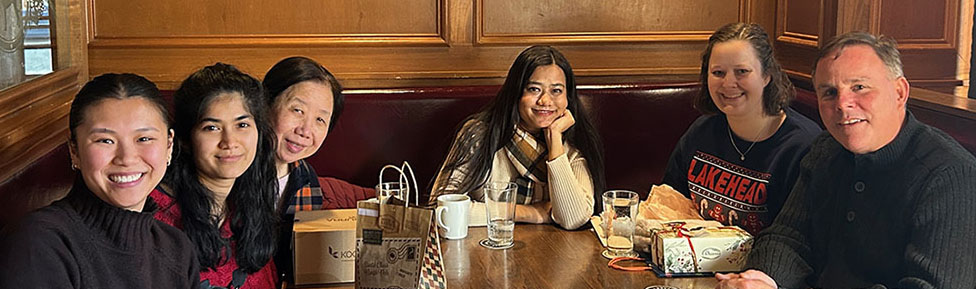
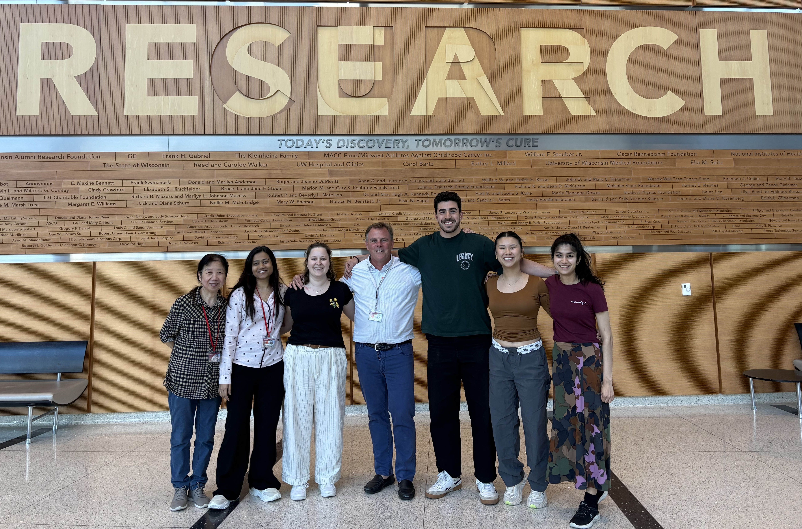

Meet The Team

How does the epigenome control cellular memory, regeneration, and aging?
Jeff’s research asks how epigenetic programs allow muscle stem cells to repair tissue — and why these programs fail in disease and aging.
How do we purify proteins without breaking what makes them work?
LiFang focuses on producing highly pure recombinant proteins that form the foundation for the lab’s biochemical and mechanistic studies.
How do muscle stem cells communicate with inflammatory cells after injury?
Adity studies how signals exchanged between immune cells and stem cells determine whether muscle regeneration succeeds or fails.
How do stem cells reinterpret the genomic blueprint to mature in muscle?
Sarah investigates how gene expression programs are established during differentiation and locked in to form functional muscle.
Can calming inflammation slow muscular dystrophy?
Sidra explores whether modifying the inflammatory environment with hyaluronic acid can enhance muscle regeneration and slow disease progression.
How do epigenetic reader proteins interpret the chromatin landscape?
Aneena studies how reader domains decode epigenetic marks to shape gene regulation during muscle development and repair.
How can we extract biological insight from complex datasets?
Eric builds computational tools that transform large-scale sequencing data into a clearer understanding of gene regulation.

Join the lab
We’re interested in working with postdocs, graduate students, and undergraduates who want rigorous training in chromatin biology and stem cell research. If you’re curious, send a brief note describing your interests and experience, and include a CV.
Quick links
Contact
Dilworth Lab • UW–Madison
Email: fdilworth@wisc.edu
Address:
Department of Cell & Regenerative Biology
1111 Highland Ave (WIMR II – Room 4518)
Madison, WI 53705